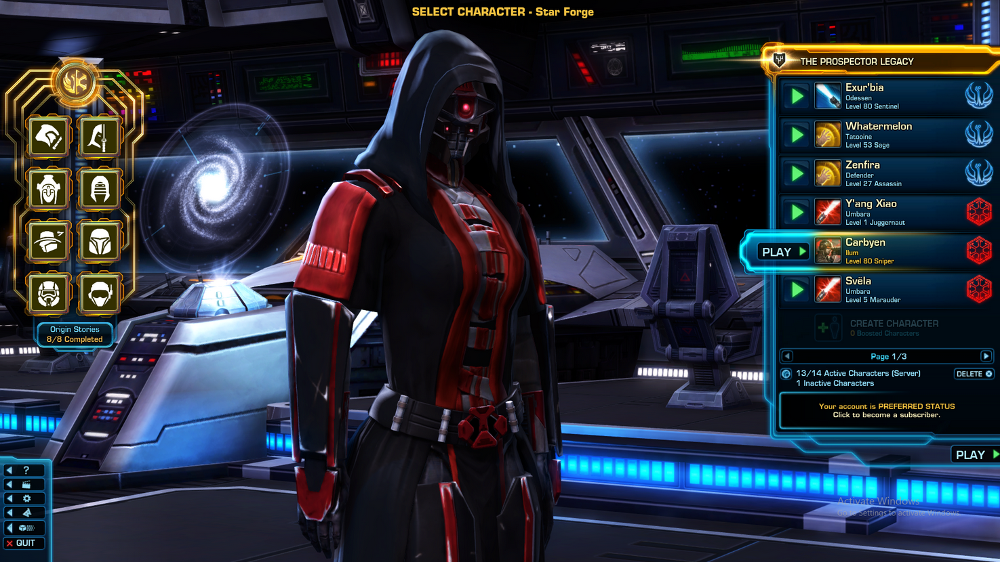

Lady Seraphina Krasnaya is a relic of a bygone era, a living legend, and a guardian of a long-forgotten empire. Born during a time when the Aventra Empire was at its zenith, she was selected for a secret and elite organisation known as "Her's Eternally". Her's were tasked with safeguarding the empire's most closely held secrets and ensuring its continued dominance.
Seraphina underwent an experimental surgery, giving her an almost infinite lifespan without the bulky technology that the Tenetur Aeternum of Jupiter releid on to continue their research. She was imbued with the strength and wisdom to fulfill her role as an agent for centuries to come. Her life was dedicated to espionage, sabotage, and intrigue on behalf of the empire.
However, the empire eventually crumbled under the weight of its own ambitions, leaving Lady Seraphina as one of the last remnants of a once-mighty civilization. Undeterred by the empire's fall, she remains loyal to Her and her oath and continues to carry out her duties, even as the world has moved on into a new age.
Over the centuries, Seraphina has adapted to the changing world, blending seamlessly into different societies and learning countless languages and skills. She has an extensive network of contacts, each generation unaware of her true age. Her agelessness grants her unparalleled experience, knowledge, and a mysterious air that often makes her adversaries underestimate her.
Her missions have evolved from protecting the empire's interests to preserving its legacy and preventing its darkest secrets from falling into the wrong hands. She seeks to fulfill her final mission, the ultimate duty to her long-forgotten empress: the retrieval or creation of a device that can take her back in time. Despite seeking knowledge of it's existence, only rumours spread by those wanting to make a quick and easy sum of money have reached her.
However, she has waited over a thousand years and can wait a thousand more for its existence to be known to her, in hopes of warning Her of the empire's fall. Despite the passage of a thousand years, Lady Seraphina Krasnaya remains a steadfast and enigmatic figure, a relentless agent of an empire that exists only in whispers and shadows, driven by an unbreakable commitment to Her and her people, no matter how ancient their memory has become.